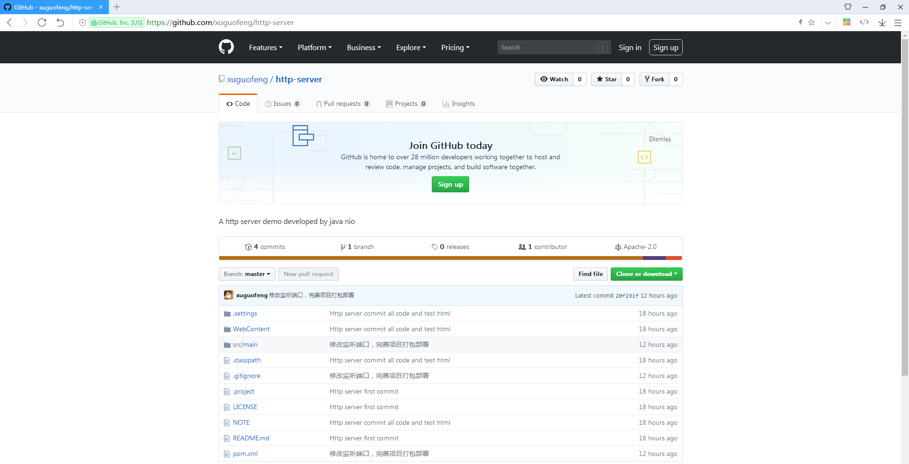
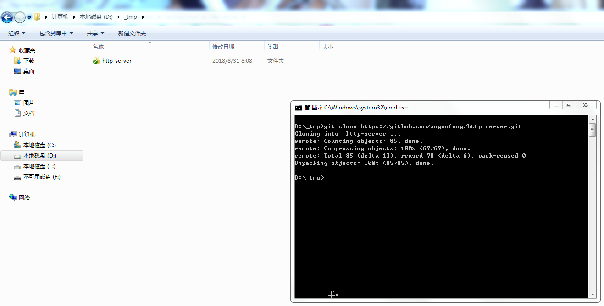
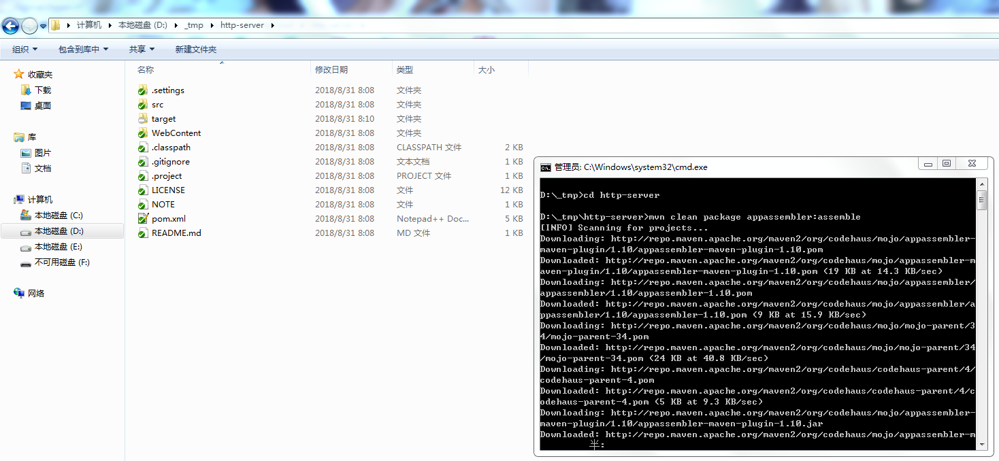
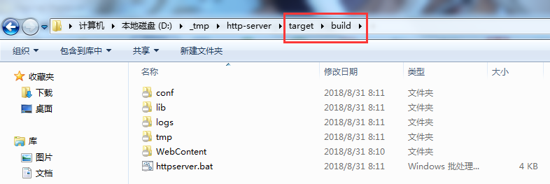
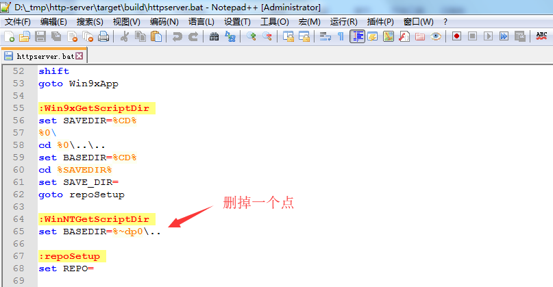
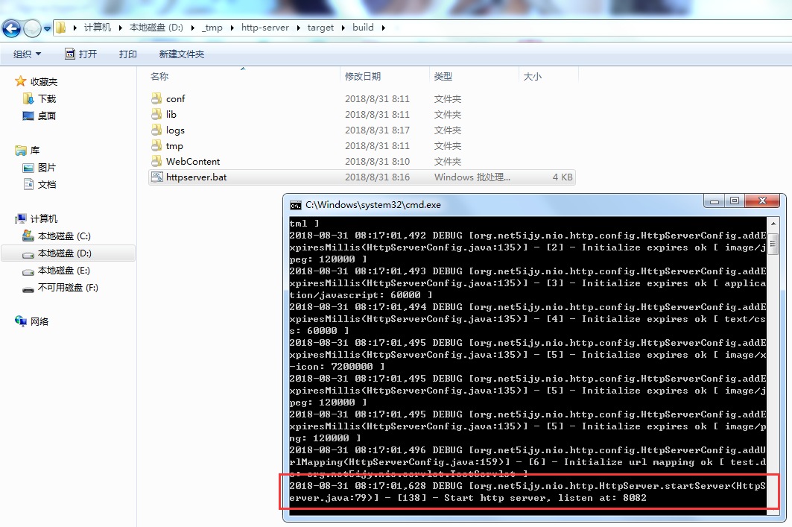
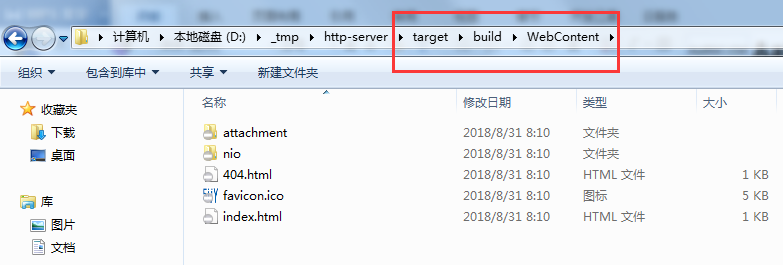
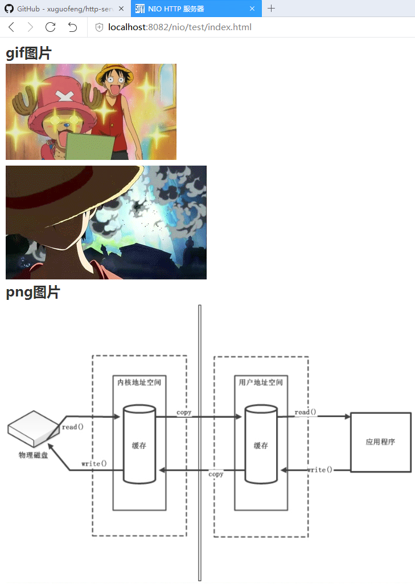
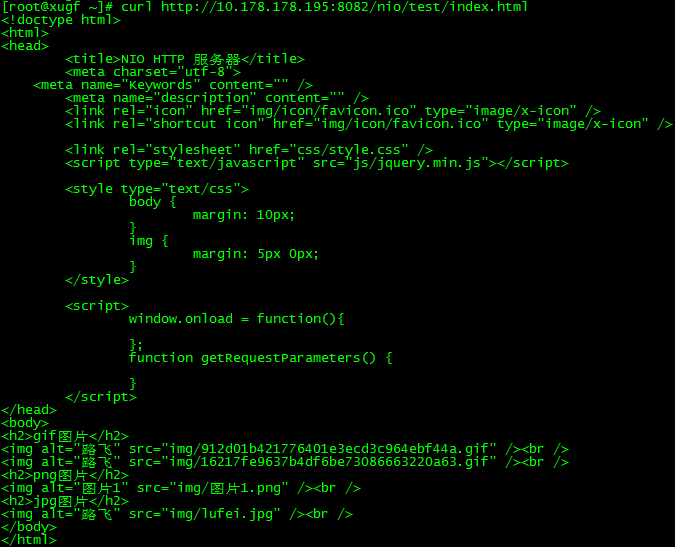
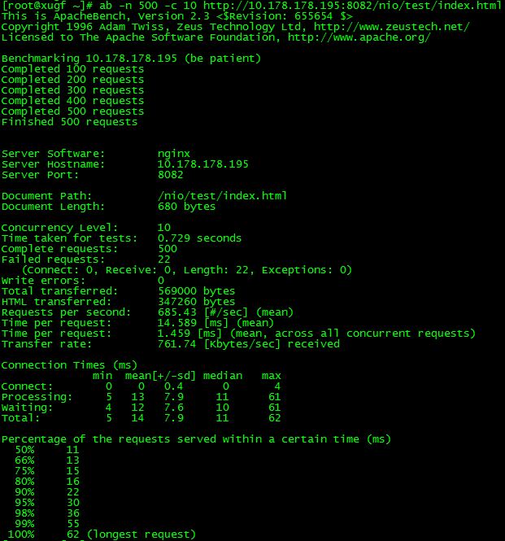

NIO HTTP 服务器说明文档
1、运行环境准备
| 操作系统 |
Windows 7 64位操作系统 |
| JDK |
java version "1.8.0_141" |
| maven |
Apache Maven 3.2.1 |
| 工作目录 |
D:\_tmp\ |
2、Github地址
https://github.com/xuguofeng/http-server

3、从Github上clone项目
D:\_tmp>git clone https://github.com/xuguofeng/http-server.git

4、使用maven打包
D:\_tmp>cd http-server
D:\_tmp\http-server>mvn clean package appassembler:assemble

执行之后，项目会部署到target/build下面

5、目录结构
| conf |
存放配置文件 |
| lib |
存放jar文件 |
| logs |
存放日志文件 |
| tmp |
存放临时文件 |
| WebContent |
部署web站点 |
6、部署启动服务
到target/build下
首先，修改httpserver.bat文件，第65行
set BASEDIR=%~dp0\..
改为：
set BASEDIR=%~dp0\.

然后，双击httpserver.bat文件即可启动服务器

服务器默认部署的根目录是WebContent目录，您可以在这个目录下面创建子目录存放web站点

7、浏览器访问
打开浏览器，访问http://localhost:8082/nio/test/index.html

8、curl和ab测试
[root@xugf ~]# curl http://10.178.178.195:8082/nio/test/index.html

[root@xugf ~]# ab -n 500 -c 10 http://10.178.178.195:8082/nio/test/index.html
